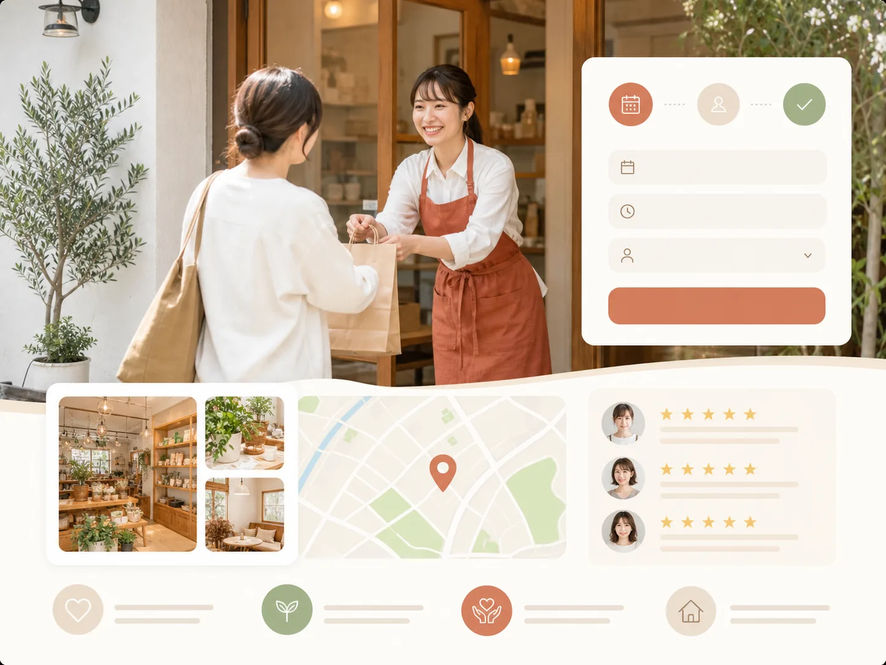

Industry Guide — Local
店舗・地域サービスLPに必要な要素とは？来店までの不安解消を解説
店舗・地域サービスLPは、地図アプリや検索から流入した人を「今すぐ行けそう」と思わせ、予約・来店まで進めるための1ページです。この記事では、必要な要素、来店可否が一瞬で判断される理由、来店前の不安を減らす具体的な工夫を解説します。
なぜ来店可否は0.5秒で決まるのか？
地図アプリや検索から店舗LPに来る人は、「今すぐ行けそうか」をファーストビューの外観・内観写真とエリア名だけで直感的に判断します。読み込みに時間がかかったり、業態がひと目で分からないページは、本文を読まれる前に離脱されます。
この判断の速さは、来店検討者の多くが「今この場所の近くで、今すぐ入れる店を探している」という状況にあることに起因します。営業時間やコンセプトを文章で説明する前に、外観・内観の写真とエリア名を最上部に置き、直感で「行けそう」と感じてもらうことを優先します。
店舗・地域サービスLPに必要な要素とは？
店舗・地域サービスLPは「ファーストビュー」「信頼・安心要素」「来店導線」の3ブロックで構成します。初めての来店に対する不安を、信頼・安心要素のブロックでどれだけ減らせるかが、予約率を左右します。
| 要素 | 目的 | 含める内容の例 |
|---|---|---|
| ファーストビュー | 0.5秒で「今すぐ行けそうか」を判断してもらう | 外観・内観の写真、エリア名、業態が一目でわかるキャッチコピー |
| 信頼・安心要素 | 初めての来店に対する不安を減らす | 施術・接客中の写真、権威付け(メディア掲載・満足度)、口コミ、料金 |
| 来店導線 | 予約・来店までの手順を明確にする | 地図、来店から施術までの流れ図、よくある質問、予約ボタン |
何が来店の不安を減らすのか？
初めての店を選ぶときの不安の多くは、「どんな雰囲気か分からない」「料金が分からない」「終わるまでの流れが分からない」という情報不足から来ます。写真・料金・流れ図でこの3つを先に見せることが、不安を減らす一番の近道です。
特に効果的なのは、完成後のイメージ写真だけでなく、施術中・接客中の写真を添えることです。店内の雰囲気やスタッフの様子が伝わることで、「知らない場所に行く」不安を「なんとなく分かっている場所に行く」感覚に変えられます。料金は範囲だけでなく、代表的なメニューの具体的な金額を示すと、来店前の見積もりがしやすくなります。
ホームページ・Googleビジネスプロフィールとの使い分けは？
店舗LPは「初めての人に来店・予約を決めてもらう1ページ」、ホームページは「店の情報を広く置いておく場所」、Googleビジネスプロフィールは「地図や検索結果で見つけてもらう入口」です。役割が違うので、どれか1つではなく組み合わせて使います。
- Googleビジネスプロフィール：地図検索で見つけてもらう。営業時間・住所・写真を最新にしておく。
- 店舗LP：広告やSNS、チラシのQRコードから来た人に、メニュー・料金・行き方・予約方法を1ページで伝える。
- ホームページ：スタッフ紹介、お知らせ、採用など、LPに入りきらない情報を置く。
営業時間や定休日がページごとに違っていると、来店前の不安になります。変更があったら、3か所とも同じ日に直す運用にしておくと安全です。
業種別の店舗LP構成例
載せる要素は同じでも、業種によって「先に見せるもの」が変わります。代表的な4つの並べ方を紹介します。
飲食店
料理と店内の写真 → 価格帯とメニューの一部 → 席数・個室・子ども連れの可否 → 地図と行き方 → 予約方法（電話・予約サイト）の順です。
美容室・サロン
得意なメニューと仕上がりの写真 → 料金表 → 担当者 → 所要時間 → 予約ボタンの順です。初めての来店の流れと、当日キャンセルの扱いも書いておきます。
教室・スクール
対象（年齢・レベル） → 体験レッスンの内容と料金 → 曜日と時間 → 講師 → 申込方法の順です。
工務店・設備工事などの訪問型サービス
対応地域 → 対応できる工事 → 費用の目安と見積もりの流れ → 事例 → 電話とフォームの順です。
写真は何を、何枚用意するか？
目安として、外観1枚、内観2〜3枚、商品やサービスの様子3〜5枚、スタッフ1〜2枚があれば、1ページを構成できます。枚数よりも、「初めての人が来店前に確かめたいもの」が写っていることが大切です。
- 外観（入口が分かる、明るい時間の写真）
- 内観（席・設備・広さが分かるもの）
- 商品・施術・レッスンの様子
- スタッフ（顔を出せる範囲で）
- 駐車場や、最寄り駅からの目印
スマートフォンで撮った写真でも使えます。明るい時間に、水平をとって撮ります。人が写る場合は、掲載の了承を得てください。
地図・予約ボタンはどこに置くか？
予約・電話のボタンは、最初の一画面、料金の直後、ページの最後の3か所に置きます。地図は「行き方」を確かめたくなる後半に置き、住所・最寄り駅からの徒歩分数・駐車場の有無を文字でも添えます。
スマートフォンでは、画面の下に固定した電話・予約ボタンが使いやすい一方で、本文に重なって読みにくくなることがあります。ボタンの高さの分だけ、ページの下に余白を取ります。営業時間外に電話に出られない店は、フォームやLINEを主にして、電話には受付時間を明記します。
店舗・地域サービスLPの構成の見本（上から順に）
店舗のLPは、「行けそうか」「いくらか」「どんな雰囲気か」「どう行くか」の順に並べます。初めての人が来店の前に確かめたいことが、この順に出てくるからです。下は、予約して来店する店（美容室・整体・サロンなど）を例にした見本です。
- 最初の画面例：◯◯駅から徒歩◯分の美容室／外観と店内の写真／初めての方のカット ◯円（税込）
- 空き状況を見て予約する予約ページへ進む。選ぶのは日時とメニュー、入力は名前と連絡先
- こんな方に例：初めての店で緊張する／仕上がりのイメージを伝えるのが苦手／子ども連れで行きたい
- メニューと料金例：代表的なメニュー3〜5つの金額（税込）と所要時間／初回の料金／追加料金が出る場合
- このメニューで予約する予約ページ、またはLINEへ。電話も載せる場合は、受付時間を添える
- 店内とスタッフ例：店内・席・設備の写真／担当するスタッフの顔と一言／接客中の様子
- 来店から終わるまでの流れ例：予約 → 来店・受付 → 相談 → 施術 → 会計／支払い方法、キャンセルの扱い
- 場所と営業時間例：地図、住所、最寄り駅からの道順、駐車場、営業時間、定休日
- よくある質問例：「当日の予約はできますか」「子ども連れでも大丈夫ですか」
- 予約する予約ページへ。予約のあとに届く連絡（確認メールなど）を、ボタンの近くに書く
この見本は、LPの構成テンプレート（基本の8ブロック）を、店舗に合わせて並べたものです。予約のボタンは、最初の画面、料金の直後、ページの最後の3か所に置いています。飲食店のように予約なしで来る人が多い店は、ボタンを「地図を開く」「電話する」に替え、場所と営業時間を前半へ上げます。設備工事や修理など電話が主になる業種は、電話のボタンを最初の画面に置きます。
制作例

上記は導線デベロッパーで作成した店舗・地域サービスLPの制作例(デザインサンプル)です。実際の案件では、業態(美容、飲食、教室など)や客層に合わせて、信頼・安心要素の見せ方を個別に設計します。
よくある質問
- 店舗LPと美容室・サロン向けLPは同じ考え方で作れますか。
- 基本構成(ファーストビュー・信頼要素・来店導線)は共通ですが、美容室やサロンは「施術内容や仕上がりのイメージ」を重視し、それ以外の地域密着店舗は「営業時間・アクセスのしやすさ」を重視するなど、業態によって強調点は変わります。
- 口コミが少ない場合はどうすればいいですか。
- 件数が少ない段階では、口コミの数を強調するより、実際の接客・施術風景の写真や、スタッフの人柄が伝わる紹介で信頼を補う方が効果的です。
- 地図やアクセス情報はどこに置くべきですか。
- 来店導線のブロック内、予約ボタンの近くに置くのが基本です。ページの最後だけでなく、料金や口コミを見て気持ちが固まったタイミングで地図が見える位置にも配置すると、離脱を防ぎやすくなります。